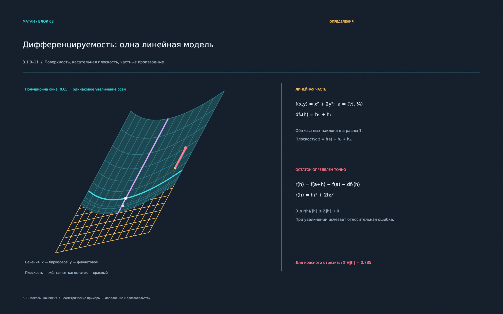

<!doctype html>
<html lang="ru">
<meta charset="utf-8">
<meta name="viewport" content="width=device-width, initial-scale=1">
<title>Дифференцирование в Rᵐ — 5 сцен</title>
<style>
*{box-sizing:border-box}body{margin:0;background:#101923;color:#e6edf7;font:16px/1.5 system-ui,sans-serif}
header,main,footer{max-width:1440px;margin:auto;padding:24px}header{display:flex;justify-content:space-between;gap:24px;align-items:center}
h1{font-size:27px;font-weight:600;margin:0}p{color:#99acbf;margin:8px 0}a{color:#64dbe0}button{font:inherit;color:inherit;background:#1d2d3c;border:1px solid #3b5062;border-radius:7px;padding:9px 14px;cursor:pointer}button:focus-visible,a:focus-visible{outline:3px solid #ffc467;outline-offset:3px}button:hover{background:#294155}button:disabled{opacity:.4;cursor:default}
nav{display:flex;gap:8px;flex-wrap:wrap}nav button[aria-current="true"]{border-color:#64dbe0;color:#64dbe0}#viewer{display:block;width:100%;height:auto;border-radius:10px;background:#17212d;border:1px solid #304454}
.controls{display:flex;align-items:center;gap:12px;margin:14px 0;flex-wrap:wrap}#counter{margin-right:auto;color:#99acbf}.prompt{padding:16px 20px;border-left:3px solid #ffc467;background:#182531;margin:20px 0}.prompt span{display:block;color:#ffc467;font-size:12px;letter-spacing:.1em;margin-bottom:6px}
.thumbs{display:grid;grid-template-columns:repeat(6,1fr);gap:12px;margin-top:24px}.thumbs button{padding:0;overflow:hidden;text-align:left;font-size:12px}.thumbs img{width:100%;display:block}.thumbs small{display:block;padding:7px 9px}.thumbs button[aria-current="true"]{border-color:#64dbe0;box-shadow:0 0 0 1px #64dbe0}footer{font-size:13px;color:#99acbf}#viewbox:fullscreen{overflow:auto;background:#101923;padding:15px}#viewbox:fullscreen #viewer{max-height:85vh;width:auto;max-width:100%;margin:auto}
@media(max-width:800px){header{display:block}.thumbs{grid-template-columns:repeat(3,1fr)}main,header,footer{padding:16px}h1{font-size:22px}}@media(max-width:460px){.thumbs{grid-template-columns:repeat(2,1fr)}}
</style>
<header><div><h1>Дифференцирование в Rᵐ</h1><p>5 тем · 12 кадров Blender · чёрные билеты 3.2.4, 3.2.5, 3.2.7</p></div><div><a href="differentiation_live.blend" download>Живые анимации .blend</a><p>Открыть в Blender → Space</p><a href="differentiation.blend" download>Статические сцены .blend</a></div></header>
<main>
<nav aria-label="Темы" id="topics"></nav>
<div class="prompt"><span>ВОПРОС К КАДРУ</span><div id="question"></div></div>
<div id="viewbox">
<div class="controls"><button id="prev" aria-label="Предыдущий кадр">← Назад</button><span id="counter" aria-live="polite"></span><button id="next" aria-label="Следующий кадр">Далее →</button><a id="original" href="01a_local_model.png" target="_blank">Оригинал PNG</a><button id="fullscreen">На весь экран</button></div></div>
<div class="thumbs" id="thumbs" aria-label="Все кадры"></div>
</main>
<footer>Клавиши ← / → переключают кадры. Иллюстрации дополняют доказательства конспекта; поверхности и отображения выбраны специально для рисунков. Векторная Лагранжа и контрпример с окружностью следуют лекции 14.</footer>
<script>
const frames=[
['01a_local_model','Линейная модель',0,'Что именно измеряет красный отрезок?'],
['01b_local_zoom','Увеличение окрестности',0,'Почему мало того, что остаток просто стремится к нулю?'],
['01c_local_limit','Относительный остаток',0,'Какая оценка работает сразу для всех направлений h?'],
['02a_staircase','Два одномерных приращения',1,'К каким двум функциям одной переменной применяется Лагранж?'],
['02b_remainder','Непрерывность производных',1,'В каком переходе используется непрерывность частных производных?'],
['03a_composition','Две деформации',2,'В каком порядке операторы действуют на h?'],
['03b_composition_zoom','Композиция вблизи точки',2,'Почему после увеличения нелинейные границы приближаются к линейным?'],
['03c_composition_remainder','Оба остатка композиции',2,'Зачем в доказательстве нужна оценка нормы K через норму h?'],
['04a_projection','Проекция на хорду',3,'Почему вспомогательная функция в конце отрезка равна квадрату нормы хорды?'],
['04b_circle','Почему нет векторного равенства',3,'Почему нельзя выбрать одну точку c для векторного равенства?'],
['05a_gradient_surface','Наклоны сечений',4,'Почему у фиолетового сечения нулевой наклон только в точке a?'],
['05b_gradient_levels','Градиент и линии уровня',4,'Почему градиент перпендикулярен касательной к линии уровня?']
];
const topics=['1 · Дифференцируемость','2 · Лесенка','3 · Композиция','4 · Лагранж','5 · Градиент'];
const $=id=>document.getElementById(id);let current=0;
topics.forEach((name,i)=>{const b=document.createElement('button');b.textContent=name;b.onclick=()=>show(frames.findIndex(f=>f[2]===i));$('topics').append(b)});
frames.forEach((f,i)=>{const b=document.createElement('button');const img=document.createElement('img');img.src=f[0]+'.png';img.alt=f[1];img.loading='lazy';const small=document.createElement('small');small.textContent=String(i+1).padStart(2,'0')+' · '+f[1];b.append(img,small);b.onclick=()=>show(i);$('thumbs').append(b)});
function show(i){current=Math.max(0,Math.min(frames.length-1,i));const f=frames[current];$('viewer').src=f[0]+'.png';$('viewer').alt=f[1];$('question').textContent=f[3];$('counter').textContent=(current+1)+' / '+frames.length+' · '+f[1];$('original').href=f[0]+'.png';$('prev').disabled=current===0;$('next').disabled=current===frames.length-1;[...$('thumbs').children].forEach((b,j)=>b.setAttribute('aria-current',String(j===current)));[...$('topics').children].forEach((b,j)=>b.setAttribute('aria-current',String(j===f[2])));history.replaceState(null,'','#'+f[0]);}
$('prev').onclick=()=>show(current-1);$('next').onclick=()=>show(current+1);document.addEventListener('keydown',e=>{if(['INPUT','TEXTAREA','SELECT'].includes(e.target.tagName))return;if(e.key==='ArrowRight'){e.preventDefault();show(current+1)}if(e.key==='ArrowLeft'){e.preventDefault();show(current-1)}});$('fullscreen').onclick=async()=>{if(document.fullscreenElement)await document.exitFullscreen();else await $('viewbox').requestFullscreen()};show(Math.max(0,frames.findIndex(f=>'#'+f[0]===location.hash)));
</script>
</html>
